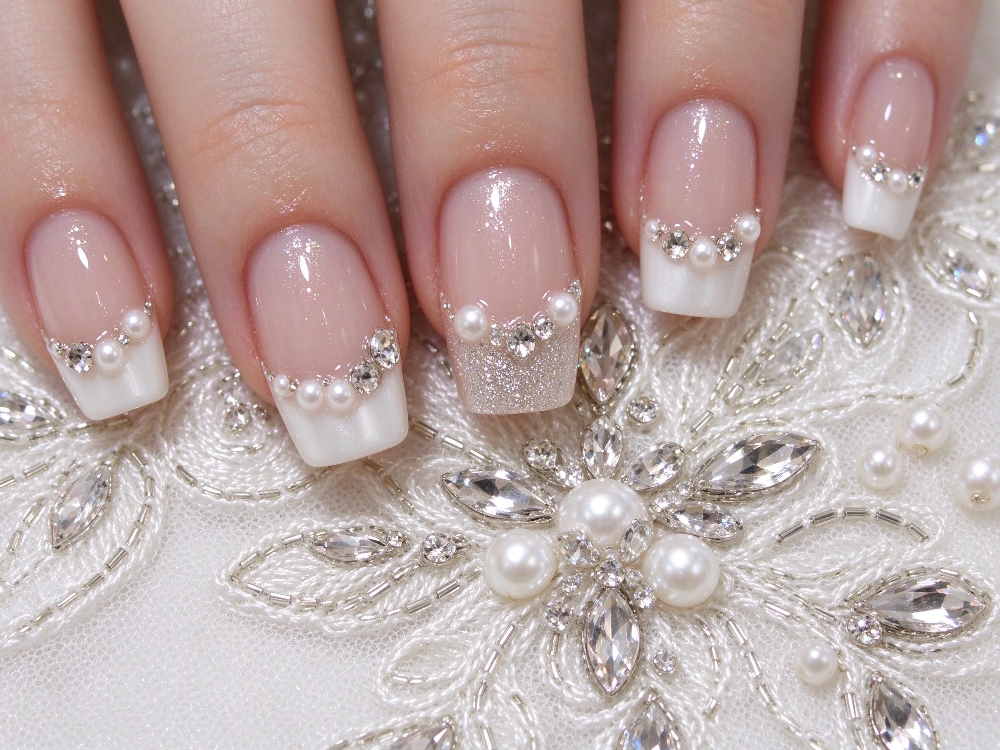

美甲新娘法式是什麼？中階入門攻略
新娘法式是婚禮上最不會出錯的選擇：細白邊、裸粉底、加一兩顆小珍珠，典雅又上鏡。
新娘法式原理與辨識重點：美甲師不說的法式基底
新娘法式跟一般法式比起來，白邊更細、弧度更柔和，底通常是裸粉或蜜桃色（不是透明），跳指點綴小珍珠或小水鑽。它不會搶走婚紗和捧花的鋒頭，卻在交換戒指、拿捧花、敬酒時剛好入鏡。
誰適合做新娘法式？婚禮經典對號入座
要結婚的新娘本人、伴娘、參加訂婚的家人；本身喜歡典雅風、要拍正式婚紗照的女生。
新娘法式美甲施作步驟：細法式＋珠飾
提前 1–2 週試做 → 甲型修方圓（戴戒指最好看）→ 上裸粉底薄塗兩層 → 指尖畫細微笑線（比一般法式更細）→ 跳指貼 1–2 顆小珍珠或小水鑽 → 封層 → 婚禮前一週再回補一次封層。
新娘法式優缺點分析：美甲持久度與傷甲評估
| 優點 | 說明 |
|---|---|
| 經典不敗、跟婚紗禮服全部搭、拍照上鏡、之後參加喜酒也能繼續戴。 | 是日系流派的招牌，中階就能上手 |
| 缺點 | 說明 |
| 微笑線對稱非常考驗美甲師技術；珍珠如果貼不好會在婚禮當天掉。 | 前置與別在婚禮前一天才第一次做——萬一跟想像中不一樣、或過敏、或指緣紅腫，完全來不及補救。試做是一定要的。沒顧好會打折 |

新娘法式新手雷區：珠飾點綴與常見錯誤
注意：別在婚禮前一天才第一次做——萬一跟想像中不一樣、或過敏、或指緣紅腫，完全來不及補救。試做是一定要的。
新娘法式和其他美甲做法的差別比較
跟『一般法式』不一樣：一般法式白邊粗、透明底；新娘法式白邊細、裸粉底、加珠飾，更精緻。
新娘法式美甲常見問題 FAQ
Q：新娘甲要提前多久做？ A：建議 1–2 週前試做，婚禮前 3–5 天再正式做一次，讓顏色最新、指緣最乾淨。
Q：拍照用亮面還是霧面？ A：亮面。霧面在鏡頭下會吃光，亮面會有自然光澤，戒指也更閃。
Q：可以做長甲嗎？ A：婚禮當天要拿捧花、戴戒指、牽手、敬酒，長甲容易卡。方圓甲型、長度剛好露出 2–3mm 最優雅。